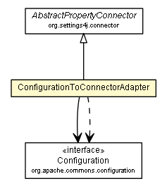

org.settings4j.helper.configuration
Class ConfigurationToConnectorAdapter

java.lang.Object
 org.settings4j.connector.AbstractConnector
org.settings4j.connector.AbstractPropertyConnector
org.settings4j.helper.configuration.ConfigurationToConnectorAdapter
org.settings4j.connector.AbstractConnector
org.settings4j.connector.AbstractPropertyConnector
org.settings4j.helper.configuration.ConfigurationToConnectorAdapter
- All Implemented Interfaces:
- Connector
public class ConfigurationToConnectorAdapter
- extends AbstractPropertyConnector
Adapter to use an Apache Commons Configuration
as Settings4j connector.
Example Usage
Create a XMLConfiguration instance and add it to the Settings4j instance as
Connector.
String connectorName = "myCommonsConfigXmlConfigConnector";
Connector connector = Settings4j.getSettings().getConnector(connectorName);
if (connector == null) {
XMLConfiguration configuration = new XMLConfiguration(new File(.....));
connector = new ConfigurationToConnectorAdapter(connectorName, configuration);
// add the connecter after the last SystemPropertyConnector or add it as first connector.
Settings4j.getSettings().addConnector(connector, //
ConnectorPositions.firstValid(//
ConnectorPositions.afterLast(SystemPropertyConnector.class), //
ConnectorPositions.atFirst() // if no SystemPropertyConnector is configured.
)//
);
}
- Author:
- brabenetz
| Methods inherited from class java.lang.Object |
clone, equals, finalize, getClass, hashCode, notify, notifyAll, toString, wait, wait, wait |
ConfigurationToConnectorAdapter
public ConfigurationToConnectorAdapter(String name,
org.apache.commons.configuration.Configuration configuration)
- Parameters:
name - The unique name of this connector.configuration - The apache commons configuration instance to wrap and use as Settings4j connector.
getProperty
protected String getProperty(String key,
String defaultValue)
- Description copied from class:
AbstractPropertyConnector
- Very similar to
System.getProperty except that the SecurityException is hidden.
- Specified by:
getProperty in class AbstractPropertyConnector
- Parameters:
key - The key to search for.defaultValue - The default value to return.
- Returns:
- the string value of the system property, or the default value if there is no property with that key.
getConfiguration
public org.apache.commons.configuration.Configuration getConfiguration()
Copyright © 2008–2014. All rights reserved.